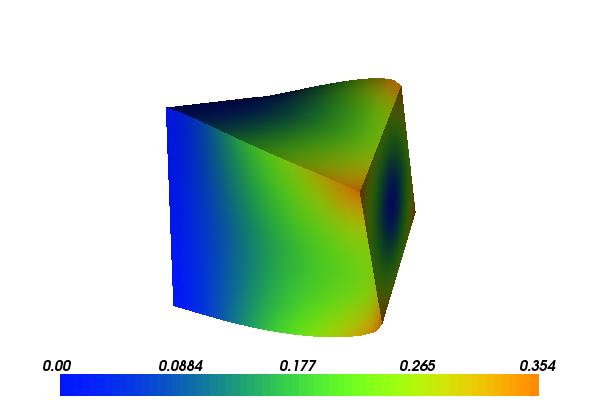

3. Hyperelasticity¶
This example demonstrates the solution of a three-dimensional elasticity problem. In addition to illustrating how to use FunctionSpaces, Expressions and how to apply Dirichlet boundary conditions, it focuses on how to:
- Minimise a non-quadratic functional
- Use automatic computation of the directional derivative
- Solve a nonlinear variational problem
- Define compiled sub-domains
- Use specific form compiler optimization options
3.1. Equation and problem definition¶
By definition, boundary value problems for hyperelastic media can be expressed as minimisation problems, and the minimization approach is adopted in this example. For a domain \(\Omega \subset \mathbb{R}^{d}\), where \(d\) denotes the spatial dimension, the task is to find the displacement field \(u: \Omega \rightarrow \mathbb{R}^{d}\) that minimises the total potential energy \(\Pi\):
where \(V\) is a suitable function space that satisfies boundary conditions on \(u\). The total potential energy is given by
where \(\psi\) is the elastic stored energy density, \(B\) is a body force (per unit reference volume) and \(T\) is a traction force (per unit reference area).
At minimum points of \(\Pi\), the directional derivative of \(\Pi\) with respect to change in \(u\)
is equal to zero for all \(v \in V\):
To minimise the potential energy, a solution to the variational equation above is sought. Depending on the potential energy \(\psi\), \(L(u; v)\) can be nonlinear in \(u\). In such a case, the Jacobian of \(L\) is required in order to solve this problem using Newton’s method. The Jacobian of \(L\) is defined as
3.1.1. Elastic stored energy density¶
To define the elastic stored energy density, consider the deformation gradient \(F\)
the right Cauchy-Green tensor \(C\)
and the scalars \(J\) and \(I_{c}\)
This demo considers a common neo-Hookean stored energy model of the form
where \(\mu\) and \(\lambda\) are the Lame parameters. These can be expressed in terms of the more common Young’s modulus \(E\) and Poisson ratio \(\nu\) by:
3.1.2. Demo parameters¶
We consider a unit cube domain:
- \(\Omega = (0, 1) \times (0, 1) \times (0, 1)\) (unit cube)
We use the following definitions of the boundary and boundary conditions:
\(\Gamma_{D_{0}} = 0 \times (0, 1) \times (0, 1)\) (Dirichlet boundary)
\(\Gamma_{D_{1}} = 1 \times (0, 1) \times (0, 1)\) (Dirichlet boundary)
\(\Gamma_{N} = \partial \Omega \backslash \Gamma_{D}\) (Neumann boundary)
- On \(\Gamma_{D_{0}}\)
- \[\begin{split}u = (&0, \\ &(0.5 + (y - 0.5)\cos(\pi/3) - (z - 0.5)\sin(\pi/3) - y)/2, \\ &(0.5 + (y - 0.5)\sin(\pi/3) + (z - 0.5)\cos(\pi/3) - x))/2)\end{split}\]
On \(\Gamma_{D_{1}}\): \(u = (0, 0, 0)\)
On \(\Gamma_{N}\): \(T = (0.1, 0, 0)\)
These are the body forces and material parameters used:
- \(B = (0, -0.5, 0)\)
- \(E = 10.0\)
- \(\nu = 0.3\)
With the above input the solution for \(u\) will look as follows:
{kind=link}

3.2. Implementation¶
The implementation is split in two files: a form file containing the definition of the variational forms expressed in UFL and the solver which is implemented in a C++ file.
Running this demo requires the files: main.cpp,
HyperElasticity.ufl and CMakeLists.txt.
3.2.1. UFL form file¶
The first step is to define the variational problem at hand. We define
the variational problem in UFL terms in a separate form file
HyperElasticity.ufl.
We are interested in solving for a discrete vector field in three dimensions, so first we need the appropriate finite element space and trial and test functions on this space
# Function spaces
element = VectorElement("Lagrange", tetrahedron, 1)
# Trial and test functions
du = TrialFunction(element) # Incremental displacement
v = TestFunction(element) # Test function
Note that VectorElement creates a finite element space of vector
fields. The dimension of the vector field (the number of components)
is assumed to be the same as the spatial dimension (in this case 3),
unless otherwise specified.
Next, we will be needing functions for the boundary source B, the
traction T and the displacement solution itself u.
# Functions
u = Coefficient(element) # Displacement from previous iteration
B = Coefficient(element) # Body force per unit volume
T = Coefficient(element) # Traction force on the boundary
Now, we can define the kinematic quantities involved in the model
# Kinematics
I = Identity(element.cell().d) # Identity tensor
F = I + grad(u) # Deformation gradient
C = F.T*F # Right Cauchy-Green tensor
# Invariants of deformation tensors
Ic = tr(C)
J = det(F)
Before defining the energy density and thus the total potential energy, it only remains to specify constants for the elasticity parameters
# Elasticity parameters
mu = Constant(tetrahedron)
lmbda = Constant(tetrahedron)
Both the first variation of the potential energy, and the Jacobian of
the variation, can be automatically computed by a call to
derivative:
# Stored strain energy density (compressible neo-Hookean model)
psi = (mu/2)*(Ic - 3) - mu*ln(J) + (lmbda/2)*(ln(J))**2
# Total potential energy
Pi = psi*dx - inner(B, u)*dx - inner(T, u)*ds
# First variation of Pi (directional derivative about u in the direction of v)
F = derivative(Pi, u, v)
# Compute Jacobian of F
J = derivative(F, u, du)
Note that derivative is here used with three arguments: the form
to be differentiated, the variable (function) we are supposed to
differentiate with respect too, and the direction the derivative is
taken in.
Before the form file can be used in the C++ program, it must be compiled using FFC by running (on the command-line):
ffc -l dolfin HyperElasticity.ufl
Note the flag -l dolfin which tells FFC to generate
DOLFIN-specific wrappers that make it easy to access the generated
code from within DOLFIN.
3.2.2. C++ program¶
The main solver is implemented in the main.cpp file.
At the top, we include the DOLFIN header file and the generated header file “HyperElasticity.h” containing the variational forms and function spaces. For convenience we also include the DOLFIN namespace.
#include <dolfin.h>
#include "HyperElasticity.h"
using namespace dolfin;
We begin by defining two classes, deriving from SubDomain
for later use when specifying domains for the boundary conditions.
// Sub domain for clamp at left end
class Left : public SubDomain
{
bool inside(const Array<double>& x, bool on_boundary) const
{
return (std::abs(x[0]) < DOLFIN_EPS) && on_boundary;
}
};
// Sub domain for rotation at right end
class Right : public SubDomain
{
bool inside(const Array<double>& x, bool on_boundary) const
{
return (std::abs(x[0] - 1.0) < DOLFIN_EPS) && on_boundary;
}
};
We also define two classes, deriving from Expression, for
later use when specifying values for the boundary conditions.
// Dirichlet boundary condition for clamp at left end
class Clamp : public Expression
{
public:
Clamp() : Expression(3) {}
void eval(Array<double>& values, const Array<double>& x) const
{
values[0] = 0.0;
values[1] = 0.0;
values[2] = 0.0;
}
};
// Dirichlet boundary condition for rotation at right end
class Rotation : public Expression
{
public:
Rotation() : Expression(3) {}
void eval(Array<double>& values, const Array<double>& x) const
{
const double scale = 0.5;
// Center of rotation
const double y0 = 0.5;
const double z0 = 0.5;
// Large angle of rotation (60 degrees)
double theta = 1.04719755;
// New coordinates
double y = y0 + (x[1] - y0)*cos(theta) - (x[2] - z0)*sin(theta);
double z = z0 + (x[1] - y0)*sin(theta) + (x[2] - z0)*cos(theta);
// Rotate at right end
values[0] = 0.0;
values[1] = scale*(y - x[1]);
values[2] = scale*(z - x[2]);
}
};
Next:
int main()
{
Inside the main function, we begin by defining a tetrahedral mesh
of the domain and the function space on this mesh. Here, we choose to
create a unit cube mesh with 25 ( = 24 + 1) verices in one direction
and 17 ( = 16 + 1) vertices in the other two directions. With this
mesh, we initialize the (finite element) function space defined by the
generated code.
// Create mesh and define function space
UnitCubeMesh mesh (24, 16, 16);
HyperElasticity::FunctionSpace V(mesh);
Now, the Dirichlet boundary conditions can be created using the class
DirichletBC, the previously initialized
FunctionSpace V and instances of the previously
listed classes Left (for the left boundary) and Right (for the
right boundary), and Clamp (for the value on the left boundary)
and Rotation (for the value on the right boundary).
// Define Dirichlet boundaries
Left left;
Right right;
// Define Dirichlet boundary functions
Clamp c;
Rotation r;
// Create Dirichlet boundary conditions
DirichletBC bcl(V, c, left);
DirichletBC bcr(V, r, right);
std::vector<const DirichletBC*> bcs;
bcs.push_back(&bcl); bcs.push_back(&bcr);
The two boundary conditions are collected in the container bcs.
We use two instances of the class Constant to define the
source B and the traction T.
// Define source and boundary traction functions
Constant B(0.0, -0.5, 0.0);
Constant T(0.1, 0.0, 0.0);
The solution for the displacement will be an instance of the class
Function, living in the function space V; we define
it here:
// Define solution function
Function u(V);
Next, we set the material parameters
// Set material parameters
const double E = 10.0;
const double nu = 0.3;
Constant mu(E/(2*(1 + nu)));
Constant lambda(E*nu/((1 + nu)*(1 - 2*nu)));
Now, we can initialize the bilinear and linear forms (a, L)
using the previously defined FunctionSpace V. We
attach the material parameters and previously initialized functions to
the forms.
// Create (linear) form defining (nonlinear) variational problem
HyperElasticity::ResidualForm F(V);
F.mu = mu; F.lmbda = lambda; F.B = B; F.T = T; F.u = u;
// Create jacobian dF = F' (for use in nonlinear solver).
HyperElasticity::JacobianForm J(V, V);
J.mu = mu; J.lmbda = lambda; J.u = u;
Now, we have specified the variational forms and can consider the solution of the variational problem.
// Solve nonlinear variational problem F(u; v) = 0
solve(F == 0, u, bcs, J);
Finally, the solution u is saved to a file named
displacement.pvd in VTK format, and the displacement solution is
plotted.
// Save solution in VTK format
File file("displacement.pvd");
file << u;
// Plot solution
plot(u);
interactive();
return 0;
3.3. Complete code¶
3.3.1. Complete UFL file¶
# Function spaces
element = VectorElement("Lagrange", tetrahedron, 1)
# Trial and test functions
du = TrialFunction(element) # Incremental displacement
v = TestFunction(element) # Test function
# Functions
u = Coefficient(element) # Displacement from previous iteration
B = Coefficient(element) # Body force per unit volume
T = Coefficient(element) # Traction force on the boundary
# Kinematics
I = Identity(element.cell().d) # Identity tensor
F = I + grad(u) # Deformation gradient
C = F.T*F # Right Cauchy-Green tensor
# Invariants of deformation tensors
Ic = tr(C)
J = det(F)
# Elasticity parameters
mu = Constant(tetrahedron)
lmbda = Constant(tetrahedron)
# Stored strain energy density (compressible neo-Hookean model)
psi = (mu/2)*(Ic - 3) - mu*ln(J) + (lmbda/2)*(ln(J))**2
# Total potential energy
Pi = psi*dx - inner(B, u)*dx - inner(T, u)*ds
# First variation of Pi (directional derivative about u in the direction of v)
F = derivative(Pi, u, v)
# Compute Jacobian of F
J = derivative(F, u, du)
3.3.2. Complete main file¶
#include <dolfin.h>
#include "HyperElasticity.h"
using namespace dolfin;
// Sub domain for clamp at left end
class Left : public SubDomain
{
bool inside(const Array<double>& x, bool on_boundary) const
{
return (std::abs(x[0]) < DOLFIN_EPS) && on_boundary;
}
};
// Sub domain for rotation at right end
class Right : public SubDomain
{
bool inside(const Array<double>& x, bool on_boundary) const
{
return (std::abs(x[0] - 1.0) < DOLFIN_EPS) && on_boundary;
}
};
// Dirichlet boundary condition for clamp at left end
class Clamp : public Expression
{
public:
Clamp() : Expression(3) {}
void eval(Array<double>& values, const Array<double>& x) const
{
values[0] = 0.0;
values[1] = 0.0;
values[2] = 0.0;
}
};
// Dirichlet boundary condition for rotation at right end
class Rotation : public Expression
{
public:
Rotation() : Expression(3) {}
void eval(Array<double>& values, const Array<double>& x) const
{
const double scale = 0.5;
// Center of rotation
const double y0 = 0.5;
const double z0 = 0.5;
// Large angle of rotation (60 degrees)
double theta = 1.04719755;
// New coordinates
double y = y0 + (x[1] - y0)*cos(theta) - (x[2] - z0)*sin(theta);
double z = z0 + (x[1] - y0)*sin(theta) + (x[2] - z0)*cos(theta);
// Rotate at right end
values[0] = 0.0;
values[1] = scale*(y - x[1]);
values[2] = scale*(z - x[2]);
}
};
int main()
{
// Create mesh and define function space
UnitCubeMesh mesh (24, 16, 16);
HyperElasticity::FunctionSpace V(mesh);
// Define Dirichlet boundaries
Left left;
Right right;
// Define Dirichlet boundary functions
Clamp c;
Rotation r;
// Create Dirichlet boundary conditions
DirichletBC bcl(V, c, left);
DirichletBC bcr(V, r, right);
std::vector<const DirichletBC*> bcs;
bcs.push_back(&bcl); bcs.push_back(&bcr);
// Define source and boundary traction functions
Constant B(0.0, -0.5, 0.0);
Constant T(0.1, 0.0, 0.0);
// Define solution function
Function u(V);
// Set material parameters
const double E = 10.0;
const double nu = 0.3;
Constant mu(E/(2*(1 + nu)));
Constant lambda(E*nu/((1 + nu)*(1 - 2*nu)));
// Create (linear) form defining (nonlinear) variational problem
HyperElasticity::ResidualForm F(V);
F.mu = mu; F.lmbda = lambda; F.B = B; F.T = T; F.u = u;
// Create jacobian dF = F' (for use in nonlinear solver).
HyperElasticity::JacobianForm J(V, V);
J.mu = mu; J.lmbda = lambda; J.u = u;
// Solve nonlinear variational problem F(u; v) = 0
solve(F == 0, u, bcs, J);
// Save solution in VTK format
File file("displacement.pvd");
file << u;
// Plot solution
plot(u);
interactive();
return 0;
}